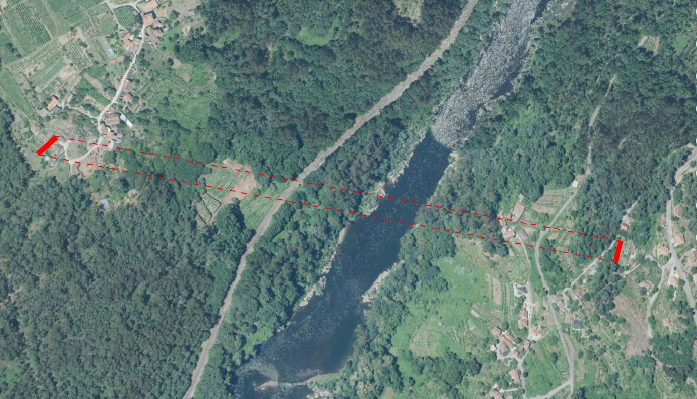

Obra2023
La puerta roja

En el valle, el río Miño traza la frontera entre España y Portugal. En la ladera gallega hay una puerta roja que, a la luz del sol, marca un hito en el paisaje. Reprodujimos la misma puerta en la ladera portuguesa. Con las mismas medidas, a la misma altura, separadas por 800 metros, ahora las dos puertas quedan comunicadas generando un vínculo a través del límite.
- Dimensiones
- 250 x 125 x 80 000 cm
- Materiales
- Madera
- Pintura
- Agradecimientos
- Cris, Tote, vecinos de Casais y Cevide